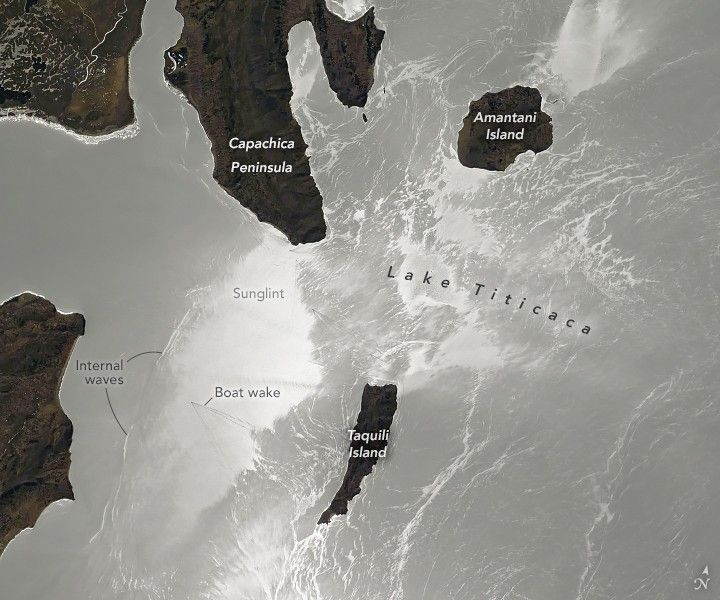

Lake Titicaca in Sunglint
An astronaut aboard the International Space Station captured this detailed photograph of the southern end of Lake Titicaca in the Andes Altiplano of Peru. The brilliant water surface of the lake reflects sunlight directly back toward the astronaut’s camera, creating an optical phenomenon known as sunglint.
The brightest zone (left center) is where the sunlight’s reflection from the water surface back to the camera was the strongest. Land surfaces that are typically rusty-tan in color appear almost black in this scene due to the exposure settings on the astronaut’s camera.
Sunglint exposes details that provide a unique view of processes on and below the lake’s surface. Subtle features on the water surface are highlighted by thin films of biogenic oils, which are naturally occurring oils commonly found in natural water bodies. Biogenic oils decrease the surface roughness of the water and increase spectral reflection, highlighting wind direction and internal waves in the image.
The biogenic oils accentuate several bright arcs generated by easterly winds, which are prevalent around the time of the year this photo was taken (October 2024). The largest arcs lie to the east of Taquili Island. A smaller arc is confined to the narrow strait between Amantani Island and the Capachica Peninsula.
Several V-shaped wakes indicate boats cruising westward. Another prominent wake in the region of strong reflection is visible in the lower left quarter of the image. The high-resolution version of the image provides a more detailed view of these wakes.
Other features made visible from space by sunglint are internal waves. These waves develop at depth within a body of water and have amplitudes of meters, but they appear on the water’s surface as waves of very low amplitude. In sunglint, surface waves appear as bright parallel lines. Bathymetric maps of Lake Titicaca indicate that the set of internal waves in this image occurred where deeper water flows against an underwater cliff-like feature at a depth of 20–50 meters (65–165 feet) near the shore of the lake.